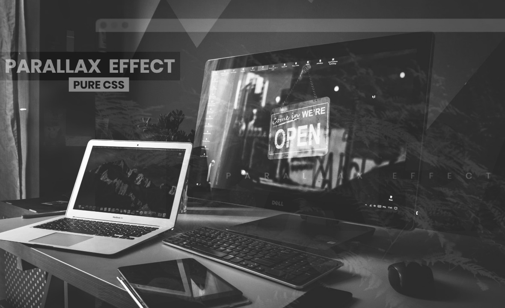

404 Page Design
With this lesson, you can create an incredible 404 page, using only HTML & CSS. It's very easy, but at the same time productive! It does not matter if you are a beginner this, but you will all get out!

Parallax Effect
In this lesson, you learn how to make parallax effect using CSS. You will be interested to learn how to make such an effect even if you are a beginner. I promise you that it will be really fun and useful